Studi Kasus: Sistem Informasi Sekolah
Published on: 9 June 2026
Laporan Praktikum Pemrograman Web — Pekan ke-9. Disusun oleh Daffa Aira Adrin (NIM 2411531006). Mata Kuliah Praktikum Pemrograman Web, Dosen Pengampu: Nurfiah, S.ST, M.Kom. Departemen Informatika, Fakultas Teknologi Informasi, Universitas Andalas, Padang.
Bab 1. Pendahuluan
1.1 Latar Belakang
Perkembangan teknologi informasi mendorong meningkatnya kebutuhan terhadap aplikasi berbasis web yang terstruktur, aman, dan mudah dikembangkan. Salah satu framework yang umum digunakan dalam pengembangan aplikasi web berbasis bahasa PHP adalah Laravel. Framework ini menyediakan berbagai fitur bawaan yang mempermudah proses pengembangan, mulai dari pengelolaan basis data, autentikasi pengguna, hingga penataan tampilan antarmuka.
Praktikum pekan ini ditujukan untuk menguji sekaligus memantapkan pemahaman mahasiswa terhadap materi Laravel yang telah dipelajari sebelumnya. Materi tersebut meliputi penggunaan controller, pengelolaan routing, pengisian data awal melalui seeding, penataan tampilan melalui layouting, serta penerapan framework Bootstrap pada Laravel sebagai fokus utama. Seluruh konsep tersebut diterapkan secara terpadu melalui studi kasus Sistem Informasi Sekolah, sehingga keterkaitan antarkomponen dalam membangun sebuah aplikasi web yang utuh dapat dipahami secara menyeluruh.
Selain sebagai sarana penguatan kompetensi, praktikum ini juga dilaksanakan sebagai pemenuhan tugas mata kuliah Praktikum Pemrograman Web pada Departemen Informatika, Fakultas Teknologi Informasi, Universitas Andalas.
1.2 Rumusan Masalah
Berdasarkan latar belakang tersebut, rumusan masalah pada praktikum ini adalah sebagai berikut:
- Bagaimana cara membuat proyek Laravel beserta konfigurasi basis data untuk studi kasus Sistem Informasi Sekolah?
- Bagaimana cara menerapkan fitur autentikasi pengguna menggunakan package Laravel UI dengan framework Bootstrap?
- Bagaimana cara melakukan kustomisasi tabel users serta pengisian data awal melalui mekanisme migration dan seeding?
- Bagaimana cara menerapkan templating dan layouting menggunakan Blade dengan template SB Admin 2?
- Bagaimana cara membangun fitur manajemen pengguna (CRUD) menggunakan controller, routing, dan view pada Laravel?
1.3 Tujuan
Tujuan yang ingin dicapai pada praktikum ini adalah sebagai berikut:
- Mampu membuat proyek Laravel beserta konfigurasi basis data untuk studi kasus Sistem Informasi Sekolah.
- Mampu menerapkan fitur autentikasi pengguna menggunakan package Laravel UI dengan framework Bootstrap.
- Mampu melakukan kustomisasi tabel users serta pengisian data awal melalui mekanisme migration dan seeding.
- Mampu menerapkan templating dan layouting menggunakan Blade dengan template SB Admin 2.
- Mampu membangun fitur manajemen pengguna (CRUD) menggunakan controller, routing, dan view pada Laravel.
Bab 2. Langkah Pengerjaan
A. Membuat Project Laravel dengan Nama Laravel-sisfo
- Dibuat sebuah folder baru dengan nama “Laravel” pada direktori
C:\xampp2\htdocs\. - Kemudian, dilakukan pengunduhan terhadap laravel installer menggunakan Composer. Langkah ini dilakukan dengan memasuki direktori yang telah dibuat menggunakna perintah
cd, dan mengetikkan perintahcomposer global require "laravel/installer"pada terminal. Karena pada praktikum sebelumnya telah dilakukan instalasi pada installer yang telah disebutkan, maka langkah ini bisa lewati. - Setelah itu, dibuat sebuah projek laravel baru dengan menggunakan perintah “
composer create-project laravel/laravel=^12 laravel-sisfo --prefer-dist” pada terminal atau powershell setelah melakukan perintahcdterhadap folder yang telah dibuat.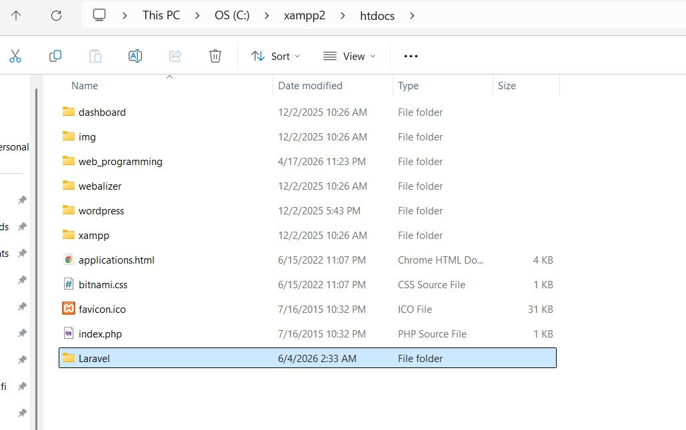
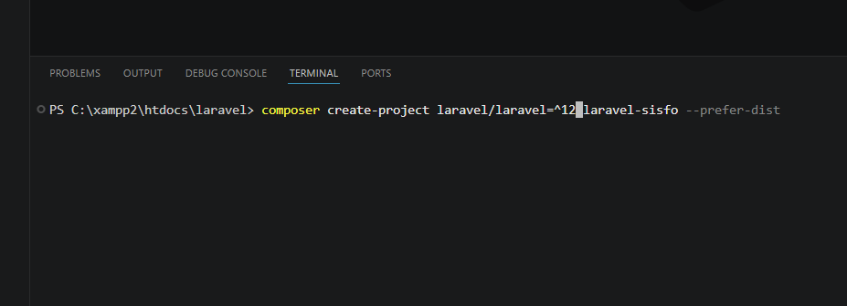
- Setelah projek telah dibuat, dijalankan perintah “
php artisan serve” pada terminal untuk menjalankan web server secara local.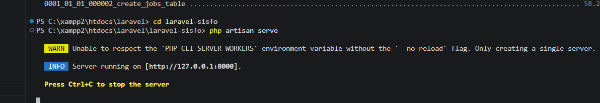
B. Konfigurasi Database
- Dilakukan konfigurasi pada file
.env, dengan melakukan un-comment terhadap parameter berikut:DB_CONNECTION=sqlite DB_HOST=127.0.0.1 DB_PORT=3306 DB_DATABASE=laravel_sisfo DB_USERNAME=root DB_PASSWORD= - Parameter
DB_CONNECTIONdiubah menjadi “mysql” agar dapat menggunakan basis data mysql, dan pameterDATABASEdiubah menjadilaravel_sisfosebagai database yang akan digunakan. Sebelum mulai langkah selanjutnya, dibuat sebuah database pada PHPMyAdmin secara manual dengan nama “laravel_sisfo”.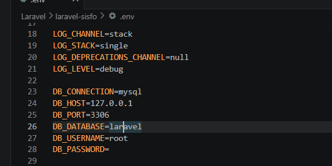
C. User Authentication
- Langkah ini diawali dengan melakukan instalasi package laravel/ui dengan mengetikkan perintah
composer require laravel/uipada terminal di dalam projek Laravel “laravel-sisfo”.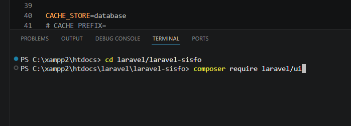
- Setelah itu, dilakukannya authentication scaffolding untuk Boostrap dengan mengetikkan perintah
php artisan ui bootstrap --auth.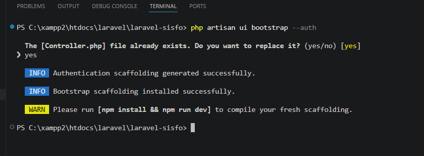
- Dilakukan instalasi, dan kompilais terhadap asset-aset bawaan framework Laravel dengan mengetikkan perintah
npm install, dannpm run dev.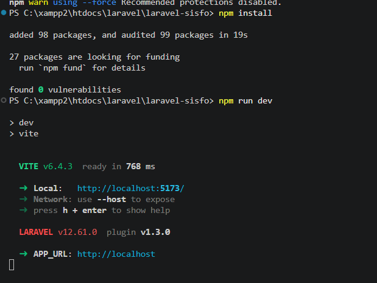
- Setelah itu, dilakukan database migration dengan menggunakan perintah
php artisan migrate. Perintah ini akan melakukan migration dan membuat tabel-tabel yang akan terbuat secara default.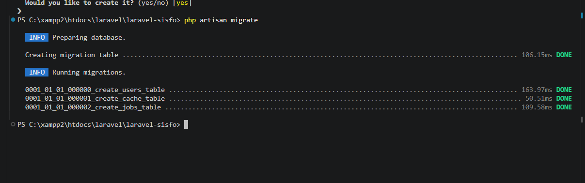
- Untuk menampilkan semua UI default framework Laravel, akses link
http://127.0.0.1:8000/login,http://127.0.0.1:8000/register, danhttp://127.0.0.1:8000/homeuntuk melihat masing-masing tampilan halaman default Laravel.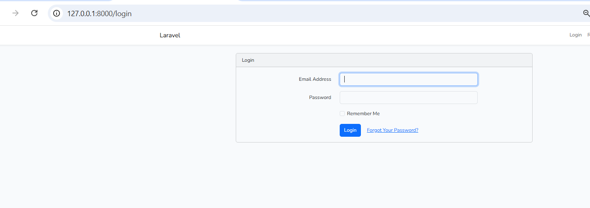
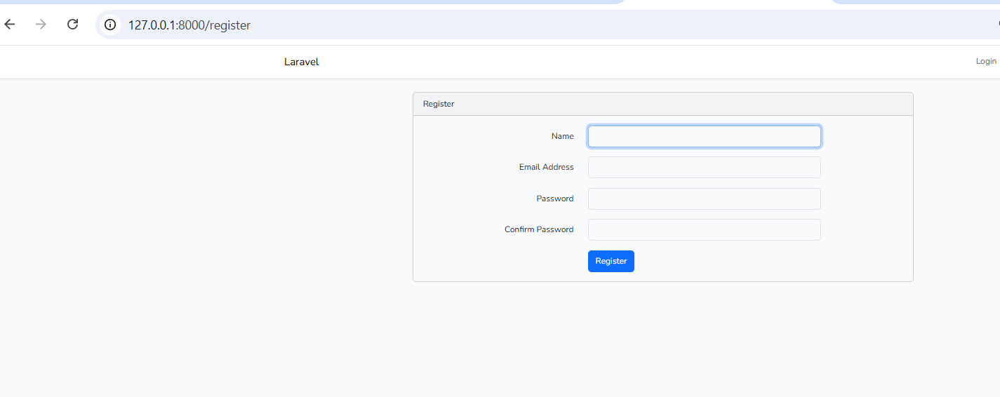
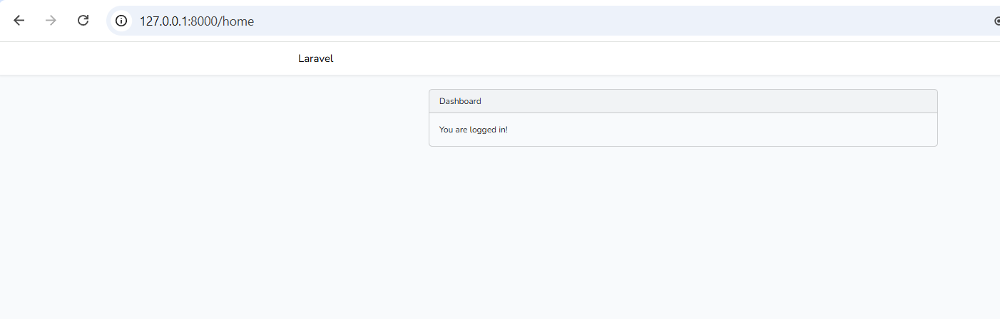
- Setelah itu, dibuat tabel
costum_table_usersdengan mengetikkan perintahphp artisan make:migrate costum_table_userspada terminal. Setelah tabel dibuat, dibuatkan kolom tabel yang terdiri dari username, level, avatar, dan status pada fungsiup(). Dituliskan semua kolom tersebut untuk di-drop ketika menggunakan perintahphp artisan migrate:rollbackpada fungsidown().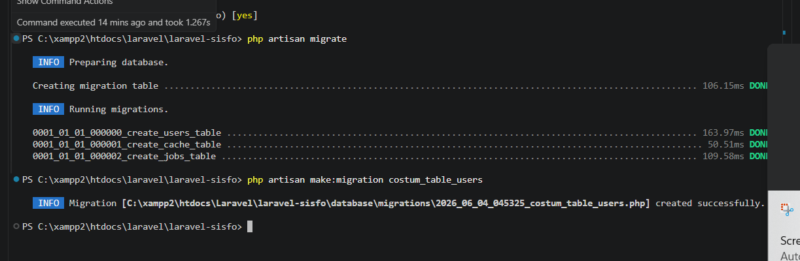
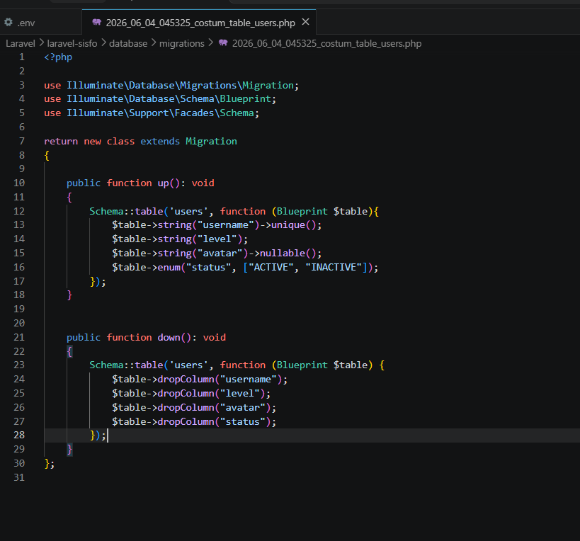
- Dilakukan migration terhadap database untuk menambahkan tabel baru dengan menggunakan perintah
php artisan migrate.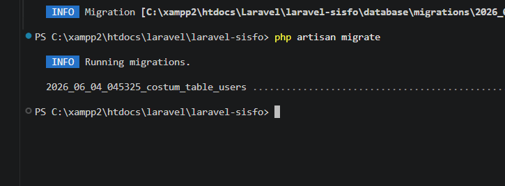
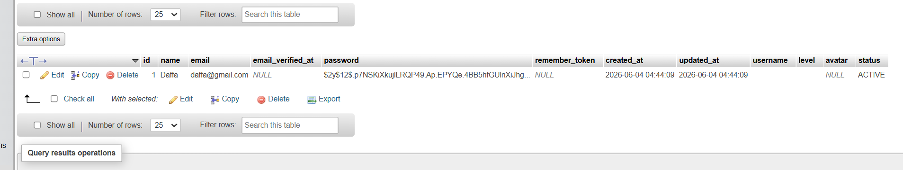
- Setelah itu, dilakukan seeding dengan membuat file seeder baru dengan nama AdminSeeder. Langkah ini diawali dengan mengetikkan perintah
php artisan make:seeder AdminSeeder. - Kemudian, pada file seeder yang telah dibuat, dilakukan seeding dengan memanggil model User, dan disimpan pada variabel admin. Kemudian dipanggil masing-masing atribut dari model user sebagai kolom yang akan diisi dengan nama yang telah ditentukan pada modul.
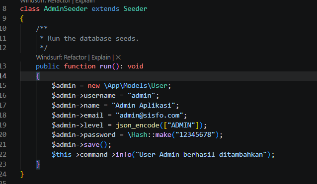
- Setelah itu, dijalankan seeding dengan menjalankan perintah
php artisan db:seed --class=AdminSeederpada terminal. Setelah dijalani seeding, dilakukan proses login pada halaman login dengan memasuki credential yang telah dimasukkan ke dalam database.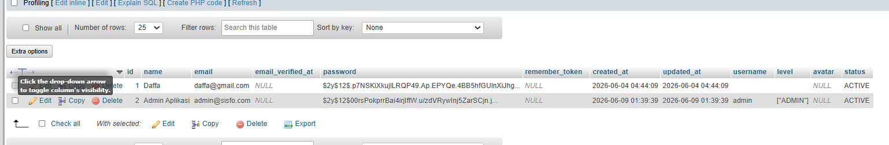
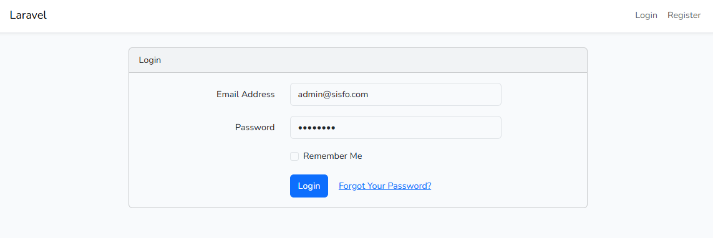
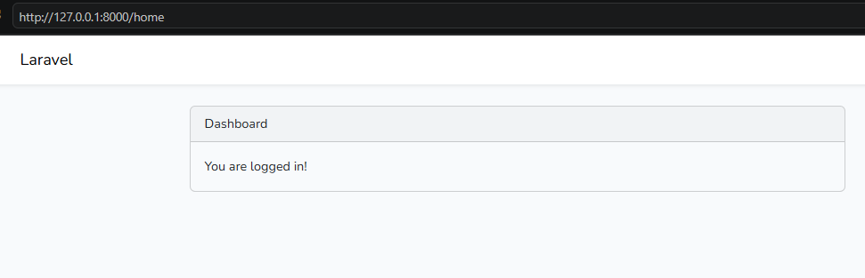
D. Templating atau Layouting
- Dilakukan pengunduhan terhadap template SB admin 2. Setelah template di-unduh, seluruh isi zip file diletakkan pada folder sbadmin yang dibuat baru pada projek Laravel di dalam folder public.
- Dibuat sebuah layout custom dengan menulis ulang file
app.blades.phpdengan menuliskan kode HTML yang disediakan pada modul.<!DOCTYPE html> <html lang="en"> <head> <meta charset="utf-8"> <meta http-equiv="X-UA-Compatible" content="IE=edge"> <meta name="viewport" content="width=device-width, initial-scale=1, shrink-to-fit=no"> <meta name="description" content=""> <meta name="author" content=""> <title>Sisfo - Login</title> <link href="{{ asset('sbadmin/vendor/fontawesomefree/css/all.min.css') }}" rel="stylesheet" type="text/css"> <link href="https://fonts.googleapis.com/css?family=Nunito:200,200i,300,300i,400,400i,600,600i,700,700i,800,800i,900,900i" rel="stylesheet"> <link href="{{ asset('sbadmin/css/sb-admin-2.min.css') }}" rel="stylesheet"> </head> <body class="bg-gradient-primary"> <div class="container"> <div class="row justify-content-center"> <div class="col-xl-6 col-lg-6 col-md-9"> <div class="card o-hidden border-0 shadow-lg my-5"> <div class="card-body p-0"> <div class="row"> <div class="col-lg-12 text-center"> <div class="p-5"> <div class="text-center"> <h1 class="h4 text-gray-900 mb-4">Halaman Login</h1> </div> <form class="user" method="POST" action="{{ route('login') }}"> @csrf <div class="form-group"> <input id="email" type="email" class="form-control form-control-user @error('email') is-invalid @enderror" name="email" value="{{ old('email') }}" required autocomplete="email" autofocus /> @error('email') <span class="invalid-feedback" role="alert"> <strong>{{ $message }}</strong> </span> @enderror </div> <div class="form-group"> <input id="password" type="password" class="form-control form-control-user @error('password') is-invalid @enderror" name="password" value="{{ old('password') }}" required /> @error('password') <span class="invalid-feedback" role="alert"> <strong>{{ $message }}</strong> </span> @enderror </div> <button type="submit" class="btn btn-primary btn-user btn-block"> Login </button> </form> </div> </div> </div> </div> </div> </div> </div> </div> <script src="{{ asset('sbadmin/vendor/jquery/jquery.min.js') }}"></script> <script src="vendor/bootstrap/js/bootstrap.bundle.min.js"></script> <script src="{{ asset('sbadmin/vendor/jqueryeasing/jquery.easing.min.js') }}"></script> <script src="{{ asset('sbadmin/js/sb-admin-2.min.js') }}"></script> </body> </html> - Diperiksa tampilan halaman login pada di web browser menggunakna url:
http://127.0.0.1:8000/loginuntuk melihat perubahan.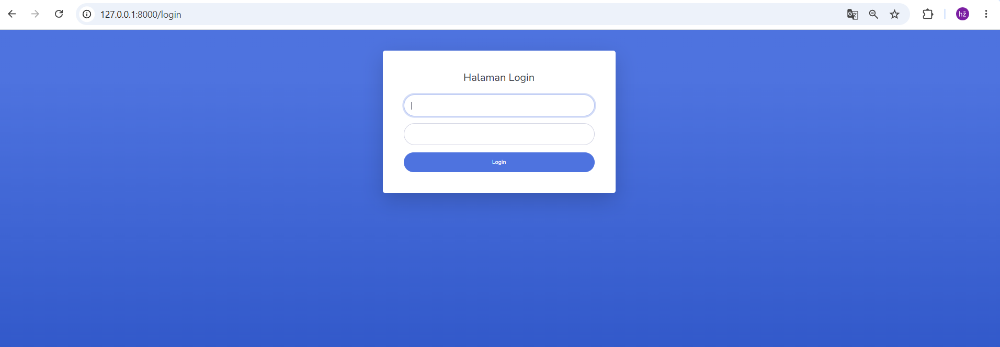
- Dibuat file
main.blade.phpsebagai tampilan utama sistem yang dibuat pada foler view/layouts. Setelah file dibuat, dituliskan kode HTML didalam file sebagai berikut:<!DOCTYPE html> <html lang="en"> <head> <meta charset="utf-8"> <meta http-equiv="X-UA-Compatible" content="IE=edge"> <meta name="viewport" content="width=device-width, initial-scale=1, shrink-to-fit=no"> <meta name="description" content=""> <meta name="author" content=""> <title>Sisfo - @yield('judul')</title> <link href="{{ asset('sbadmin/vendor/fontawesomefree/css/all.min.css') }}" rel="stylesheet" type="text/css"> <link href="https://fonts.googleapis.com/css?family=Nunito:200,200i,300,300i,400,400i,600,600i,700,700i,800,800i,900,900i" rel="stylesheet"> <link href="{{ asset('sbadmin/css/sb-admin-2.min.css') }}" rel="stylesheet"> </head> <body id="page-top"> <div id="wrapper"> @include('layouts.sidebar') <div id="content-wrapper" class="d-flex flex-column"> <div id="content"> @include('layouts.topbar') <div class="container-fluid"> <h1 class="h3 mb-4 text-gray-800">@yield('judul')</h1> @yield('konten') </div> </div> <footer class="sticky-footer bg-white"> <div class="container my-auto"> <div class="copyright text-center my-auto"> <span>Copyright © Sisfo</span> </div> </div> </footer> </div> </div> <a class="scroll-to-top rounded" href="#page-top"> <i class="fas fa-angle-up"></i> </a> <div class="modal fade" id="logoutModal" tabindex="-1" role="dialog" aria-labelledby="exampleModalLabel" aria-hidden="true"> <div class="modal-dialog" role="document"> <div class="modal-content"> <div class="modal-header"> <h5 class="modal-title" id="exampleModalLabel">Yakin akan keluar aplikasi?</h5> <button class="close" type="button" data-dismiss="modal" aria-label="Close"> <span aria-hidden="true">×</span> </button> </div> <div class="modal-body">Silahkan klik tombol logout untuk keluar aplikasi.</div> <div class="modal-footer"> <button class="btn btn-secondary" type="button" data-dismiss="modal">Cancel</button> <form action="{{ route('logout') }}" method="POST"> @csrf <button class="btn btn-primary" style="cursor:pointer">Logout</button> </form> </div> </div> </div> </div> <script src="{{ asset('sbadmin/vendor/jquery/jquery.min.js') }}"></script> <script src="{{ asset('sbadmin/vendor/bootstrap/js/bootstrap.bundle.min.js') }}"></script> <script src="{{ asset('sbadmin/vendor/jqueryeasing/jquery.easing.min.js') }}"></script> <script src="{{ asset('sbadmin/js/sb-admin-2.min.js') }}"></script> </body> </html> - Dibuat file baru dengan nama
sidebar.blade.phppada folder layouts, dan diisi dengan kode HTML sebagai berikut:<ul class="navbar-nav bg-gradient-primary sidebar sidebar-dark accordion" id="accordionSidebar"> <!-- Sidebar - Brand --> <a class="sidebar-brand d-flex align-items-center justify-content-center" href="#"> <div class="sidebar-brand-icon rotate-n-15"> <i class="fas fa-laugh-wink"></i> </div> <div class="sidebar-brand-text mx-3">Sisfo</div> </a> <!-- Divider --> <hr class="sidebar-divider my-0"> <!-- Nav Item - Dashboard --> <li class="nav-item"> <a class="nav-link" href="index.html"> <i class="fas fa-fw fa-tachometer-alt"></i> <span>Dashboard</span> </a> </li> <!-- Divider --> <hr class="sidebar-divider d-none d-md-block"> <!-- Sidebar Toggler (Sidebar) --> <div class="text-center d-none d-md-inline"> <button class="rounded-circle border-0" id="sidebarToggle"></button> </div> </ul> - Dibuatkan sebuah file baru dengan nama
topbar.blade.phppada folder layouts, dan diisikan dengan kode sebagai berikut:<nav class="navbar navbar-expand navbar-light bg-white topbar mb-4 static-top shadow"> <button id="sidebarToggleTop" class="btn btn-link d-md-none rounded-circle mr-3"> <i class="fa fa-bars"></i> </button> <ul class="navbar-nav ml-auto"> <div class="topbar-divider d-none d-sm-block"></div> <li class="nav-item dropdown no-arrow"> @if (\Auth::user()) <a class="nav-link dropdown-toggle" href="#" id="userDropdown" role="button" data-toggle="dropdown" aria-haspopup="true" aria-expanded="false"> <span class="mr-2 d-none d-lg-inline text-gray-600 small">{{ Auth::user()->name }}</span> <img class="img-profile rounded-circle" src="{{ asset('sbadmin/img/undraw_profile.svg') }}"> </a> @endif <div class="dropdown-menu dropdown-menu-right shadow animated--grow-in" aria-labelledby="userDropdown"> <a class="dropdown-item" href="#"> <i class="fas fa-user fa-sm fa-fw mr-2 text-gray-400"></i> Profile </a> <a class="dropdown-item" href="#"> <i class="fas fa-cogs fa-sm fa-fw mr-2 text-gray-400"></i> Settings </a> <div class="dropdown-divider"></div> <a class="dropdown-item" href="#" data-toggle="modal" data-target="#logoutModal"> <i class="fas fa-sign-out-alt fa-sm fa-fw mr-2 text-gray-400"></i> Logout </a> </div> </li> </ul> </nav> - Setelah itu, diubah isi kode pada file
main.blade.phpdengan kode HTML sebagai berikut:@extends('layouts.main') @section('judul', 'Dashboard') @section('konten') <p>Dashboard</p> @endsection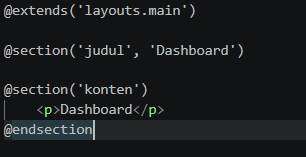
- Setelah semua perubahan, dan penambahan telah dilakukan baik dari kode, ataupun pembuatan file, perubahan tampilan dapat diobservasi dengan mengunjungi URL:
http://127.0.0.1:8000/homepada web browser.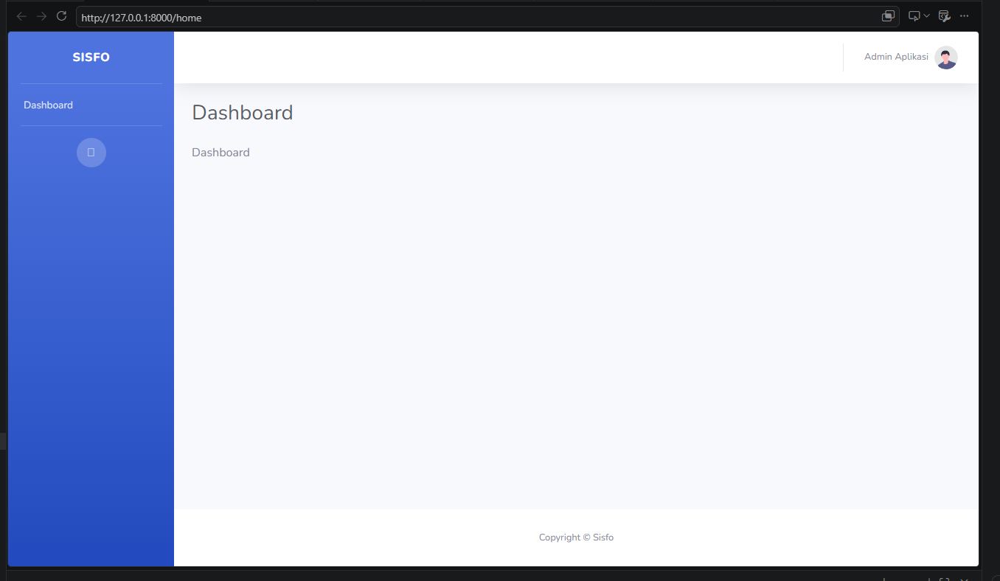
E. Manajemen Users
- Dibuatkan sebuah controller baru guna mengelola pengguna-pengguna ketika mengakses sistem. Langkah diawali dengan pembuatan controller dengan nama UserController dengan menjalani perintah
php artisan make:controller UserController --resourcepada terminal. - Setelah itu, diisikan kode sebagia berikut dalam file UserController:
<?php namespace App\Http\Controllers; use Illuminate\Http\Request; class UserController extends Controller { /** * Display a listing of the resource. * * @return \Illuminate\Http\Response */ public function index() { // } /** * Show the form for creating a new resource. * * @return \Illuminate\Http\Response */ public function create() { // } /** * Store a newly created resource in storage. * * @param \Illuminate\Http\Request $request * @return \Illuminate\Http\Response */ public function store(Request $request) { // } /** * Display the specified resource. * * @param int $id * @return \Illuminate\Http\Response */ public function show($id) { // } /** * Show the form for editing the specified resource. * * @param int $id * @return \Illuminate\Http\Response */ public function edit($id) { // } /** * Update the specified resource in storage. * * @param \Illuminate\Http\Request $request * @param int $id * @return \Illuminate\Http\Response */ public function update(Request $request, $id) { // } /** * Remove the specified resource from storage. * * @param int $id * @return \Illuminate\Http\Response */ public function destroy($id) { // } } - Kemudian dilakukan penambahan route pada file
web.phpagar pengguna dapat melakukan navigasi pada halaman web.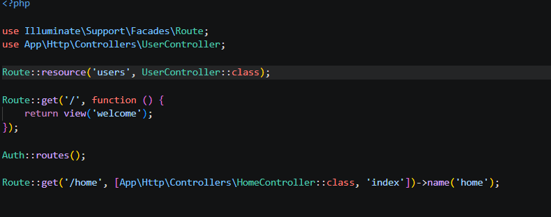
- Pada file UserController, dituliskan perintah return untuk mengarahkan users pada view create pada fungsi create().
public function create() { return view('users.create'); } - Setelah itu, dibuatkan view baru dengan membuat folder users pada folder views, dan dibuat file dengan nama create.blade.php. Di dalam file, dituliskan kode sebagai berikut guna membuat tampilan halaman create:
@extends('layouts.main') @section("judul") Create User @endsection @section('konten') <P>Konten</P> @endsection - Kemudian, ditambahkan link untuk mengakses bootstrap pada file main.blade.php, serta menambahkan script JS untuk memungkinkan pengguna memakai fitur pemilihan file yang lebih dari satu.
<script> $(document).ready(function() { $('.select2-multiple').select2({ placeholder: "Pilih", allowClear: true }); }); </script> - Kemudian, dilakukan penyesuaian terhadap kode create.blade.php. Berikut adalah kodenya:
@extends('layouts.main') @section('judul', 'Create User') @section('konten') <div class="card shadow mb-4"> <div class="card-header py-3"> </div> <div class="card-body"> <div class="row"> <div class="col-lg-9"> <form method="POST" action="{{ route('users.store') }}"> @csrf <div class="form-group row"> <label class="col-sm-3 col-form-label text-center">Nama</label> <div class="col-sm-9"> <input type="text" class="form-control" id="nama" name="nama"> </div> </div> <div class="form-group row"> <label class="col-sm-3 col-form-label text-center">Email</label> <div class="col-sm-9"> <input type="email" class="form-control" id="email" name="email"> </div> </div> <div class="form-group row"> <label class="col-sm-3 col-form-label text-center">Username</label> <div class="col-sm-9"> <input type="text" class="form-control" id="username" name="username"> </div> </div> <div class="form-group row"> <label class="col-sm-3 col-form-label text-center">Password</label> <div class="col-sm-2"> <input type="password" class="form-control" id="password" name="password"> </div> </div> <div class="form-group row"> <label class="col-sm-3 col-form-label text-center">Level</label> <div class="col-sm-4 mr-2"> <select class="form-control select2-multiple" name="level[]" multiple="multiple"> <option value="ADMIN">ADMIN</option> <option value="GURU">GURU</option> <option value="STAFF">STAFF</option> </select> </div> </div> <div class="form-group row"> <div class="col-sm-10 text-center"> <button type="reset" class="btn btn-warning btn-sm">Batal</button> <button type="submit" class="btn btn-primary btn-sm">Simpan</button> </div> </div> </form> </div> </div> </div> </div> @endsection - Untuk melihat tampilan halaman create, dapat dilakukan dengan mengunjungi URL:
http://127.0.0.1:8000/users/create.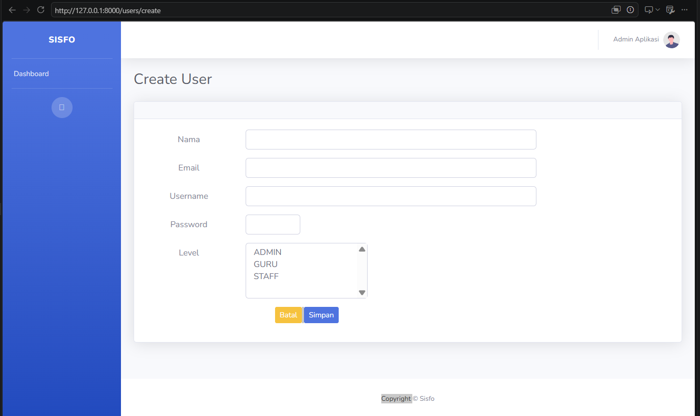
- Setelah itu, ditambahkan kode program sebagai berikut pada fungsi store di file UserController:
public function store(Request $request) { $user = new \App\Models\User; $user->name = $request->get('nama'); $user->username = $request->get('username'); $user->email = $request->get('email'); $user->password = \Hash::make($request->get('password')); $user->level = json_encode($request->get('level')); $user->save(); return redirect()->route('users.index')->with('status','user baru berhasil ditambahkan'); } - Setelah itu, dituliskan kode program untuk menampilkan seluruh daftar user pada view index di dalam fungsi index() pada file UserController.
public function index() { $users = \App\Models\User::all(); return view('users.index', compact('users')); } - Kemudian, dibuatkan sebuah file index.blade.php pada folder view\user dengan isi kode program sebagai berikut untuk menampilkan data user yang telah diambil menggunakan controller:
@extends('layouts.main') @section('judul', 'Users') @section('konten') @if(session('status')) <div class="alert alert-success"> {{ session('status') }} </div> @endif <div class="card shadow mb-4"> <div class="card-header py-3"> </div> <div class="card-body"> <div class="table-responsive"> <table class="table table-bordered" id="dataTable" width="100%" cellspacing="0"> <thead> <tr> <th><b>Name</b></th> <th><b>Username</b></th> <th><b>Email</b></th> <th><b>Action</b></th> </tr> </thead> <tbody> @foreach($users as $user) <tr> <td>{{ $user->name }}</td> <td>{{ $user->username }}</td> <td>{{ $user->email }}</td> <td> [action] </td> </tr> @endforeach </tbody> </table> </div> </div> </div> @endsection - Setelah itu, ditambahkan file css datatables pada bagian head file main.blade.php, dan bagian bawah file main.blade.php. Berikut adalah tag html yang perlu ditambahkan pada tempat yang telah ditentukan:
<link href="{{ asset('sbadmin/vendor/datatables/dataTables.bootstrap4.min.css') }}" rel="stylesheet"> <script src="{{ asset('sbadmin/vendor/datatables/jquery.dataTables.min.js') }}"></script> <script src="{{ asset('sbadmin/vendor/datatables/dataTables.bootstrap4.min.js') }}"></script> <script src="{{ asset('sbadmin/js/demo/datatables-demo.js') }}"></script> - Kemudian, ditambahkan elemen button untuk membuka form tambah user dengan menuliskan kode program sebagai berikut pada file index.blade.php:
<p> <a href="{{ route('users.create') }}" class="btn btn-primary btnsm">Tambah User</a> </p>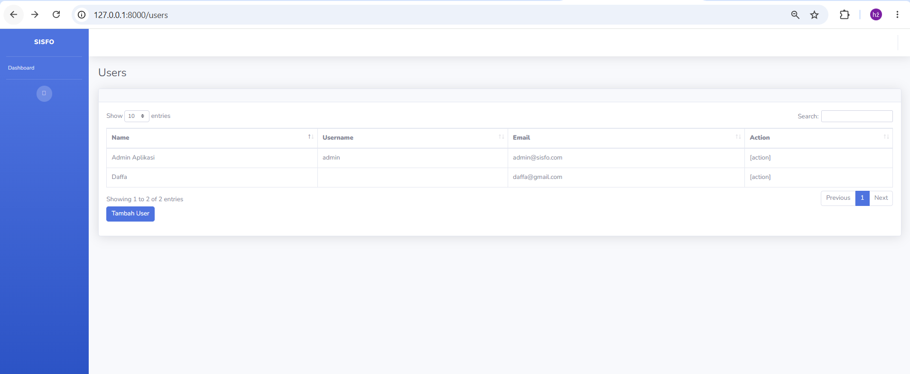
- Setelah itu, ditambahkan tombol update agar memungkinka admin untuk memperbaharui data pengguna dengan mengarahkannya menuju halaman update user dengan pengisi kode program sebagai berikut pada file index.blade.php di kolom action:
<td> <a href="{{ route('users.edit', $user->id) }}" class="btn btn-sm btn-success">Edit</a> </td> - Kemudian, ditambahkan kode program action edit pada file UserController agar admin dapat melakukan edit terhadap data pengguna. Kode program bekerja dengan membuat tombol action edit untuk memanggil view edit yang terletak pada folder users. Berikut adalah kode programnya:
public function edit($id) { $user = \App\Models\User::findOrFail($id); return view('users.edit', ['user' => $user]); } - Setelah itu, dibuatkan view edit pada folder users dengan nama file edit.blade.php, dan diisi dengan kode HTML sebagai berikut:
@extends('layouts.main') @section('judul', 'Edit User') @section('konten') <div class="card shadow mb-4"> <div class="card-header py-3"> </div> <div class="card-body"> <div class="row"> <div class="col-lg-9"> <form method="POST" action="{{ route('users.update', [$user->id]) }}"> @method('PUT') @csrf <div class="form-group row"> <label class="col-sm-3 col-form-label text-center">Nama</label> <div class="col-sm-9"> <input type="text" class="form-control" id="nama" name="nama" value="{{ $user->name }}"> </div> </div> <div class="form-group row"> <label class="col-sm-3 col-form-label text-center">Email</label> <div class="col-sm-9"> <input type="email" class="form-control" id="email" name="email" value="{{ $user->email }}"> </div> </div> <div class="form-group row"> <label class="col-sm-3 col-form-label text-center">Username</label> <div class="col-sm-9"> <input type="text" class="form-control" id="username" name="username" value="{{ $user->username }}"> </div> </div> <div class="form-group row"> <label class="col-sm-3 col-form-label text-center">Level</label> <div class="col-sm-4 mr-2"> <select class="form-control select2-multiple" name="level[]" multiple="multiple"> <option value="ADMIN" {{ in_array('ADMIN', json_decode($user->level)) ? 'selected' : '' }}>ADMIN</option> <option value="GURU" {{ in_array('GURU', json_decode($user->level)) ? 'selected' : '' }}>GURU</option> <option value="STAFF" {{ in_array('STAFF', json_decode($user->level)) ? 'selected' : '' }}>STAFF</option> </select> </div> </div> <div class="form-group row"> <div class="col-sm-10 text-center"> <a href="{{ route('users.index') }}" class="btn btn-warning btn-sm">Batal</a> <button type="submit" class="btn btn-primary btn-sm">Simpan</button> </div> </div> </form> </div> </div> </div> </div> @endsection - Tampilan view dapat dilihat pada url:
http://127.0.0.1:8000/users/2/edit.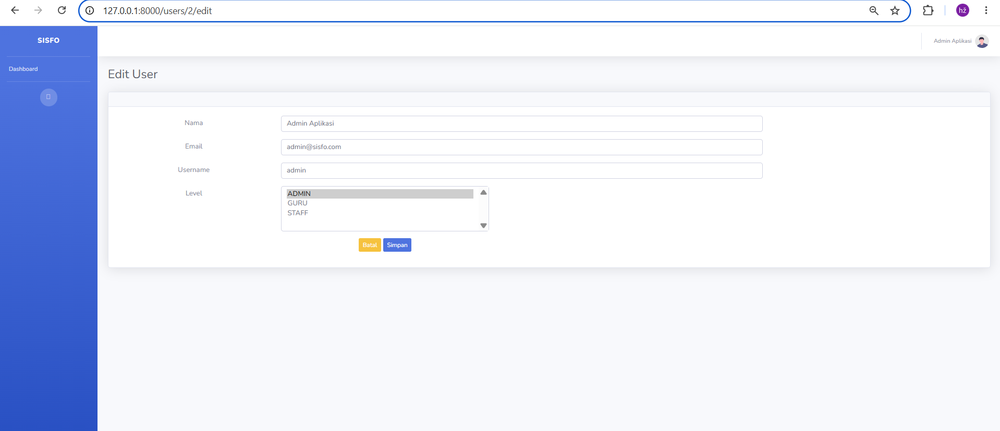
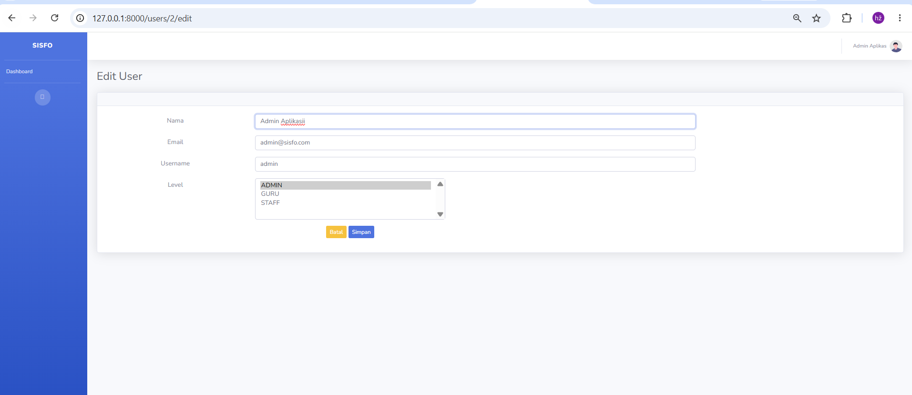
- Kemudian, dibuatkan kode program untuk logika pembaharuan data pengguna dengan memasukkan kode program berikut pada function edit pada UserController:
public function update(Request $request, $id) { $user = \App\Models\User::findOrFail($id); $user->name = $request->get('nama'); $user->level = json_encode($request->get('level')); $user->save(); return redirect()->route('users.index', [$id])->with('status', 'User berhasil diubah'); }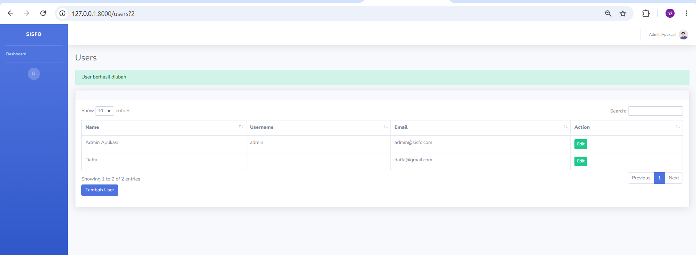
- Setelah itu, ditambahkan tombol delete disamping tombol edit pada kolom action dengan menambahkan kode program berikut pada file index.blade.php:
<form onsubmit="return confirm('Hapus data user?')" class="d-inline" action="{{ route('users.destroy', $user->id) }}" method="POST"> @csrf @method('DELETE') <button type="submit" class="btn btn-danger btn-sm">Hapus</button> </form> - Dituliskan pada fungsi destroy di file UserController untuk menghapus data pengguna yang dipilih dengan menggunakan method
->delete()pada data user yang ada, dan memberikan status berhasil dihapus jika action berhasil dilakukan. Berikut adalah kode programnya:public function destroy($id) { $user = \App\Models\User::findOrFail($id); $user->delete(); return redirect()->route('users.index')->with('status', 'User berhasil dihapus'); } - Berikut adalah tampilan dari menghapus user dari list:
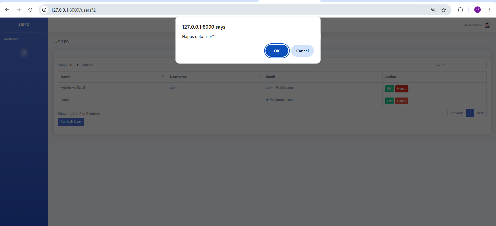
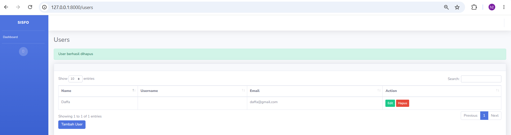
- Ditambahkan menu users pada sidebar halaman home untuk memungkinkan navigasi pengguna ke halaman index. Berikut adalah kode HTML yang diletakkan pada file sidebar.blade.php di folder layouts:
<li class="nav-item"> <a class="nav-link" href="{{ route('users.index') }}"> <i class="fas fa-fw fa-users"></i> <span>Users</span> </a> </li> - Berikut adalah tampilan menu baru yang terletak pada sidebar halaman home:
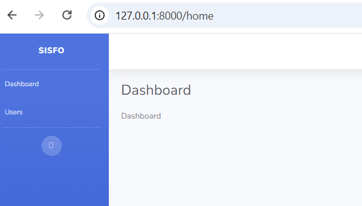
Bab 3. Kesimpulan
Berdasarkan praktikum yang telah dilaksanakan, dapat disimpulkan bahwa pembangunan aplikasi Sistem Informasi Sekolah menggunakan Laravel berhasil dilakukan dengan mengintegrasikan beberapa konsep utama yang telah dipelajari. Proyek diawali dengan pembuatan proyek serta konfigurasi basis data, kemudian dilanjutkan dengan penerapan fitur autentikasi pengguna.
Penerapan package Laravel UI terbukti mempermudah pembuatan fitur autentikasi karena controller, view, dan route yang dibutuhkan dihasilkan secara otomatis (scaffolding) dengan tampilan yang telah menggunakan framework Bootstrap. Selain itu, mekanisme migration dan seeding memungkinkan kustomisasi struktur tabel users serta pengisian data awal secara terprogram tanpa perlu memasukkan data secara manual.
Penerapan templating dan layouting melalui Blade dengan perintah seperti @extends, @yield, @section, dan @include serta penggunaan template SB Admin 2 berhasil menjaga konsistensi tampilan sekaligus memisahkan kode antarbagian aplikasi. Fitur manajemen pengguna yang dibangun menggunakan resource controller turut menyederhanakan pemetaan operasi CRUD secara terstruktur. Secara keseluruhan, praktikum ini memperkuat pemahaman mengenai integrasi framework Bootstrap dengan berbagai komponen Laravel dalam membangun aplikasi web yang fungsional.
Repository Praktikum
Kode sumber dan file konfigurasi dari praktikum ini dapat diakses pada repositori GitHub berikut:
https://github.com/DaffaAiraAdrn/PwebPraktikum9